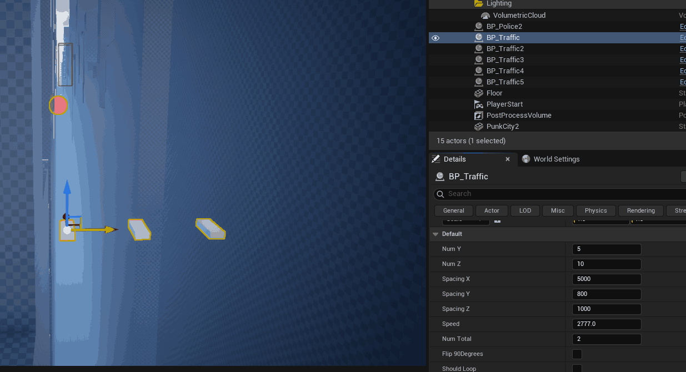
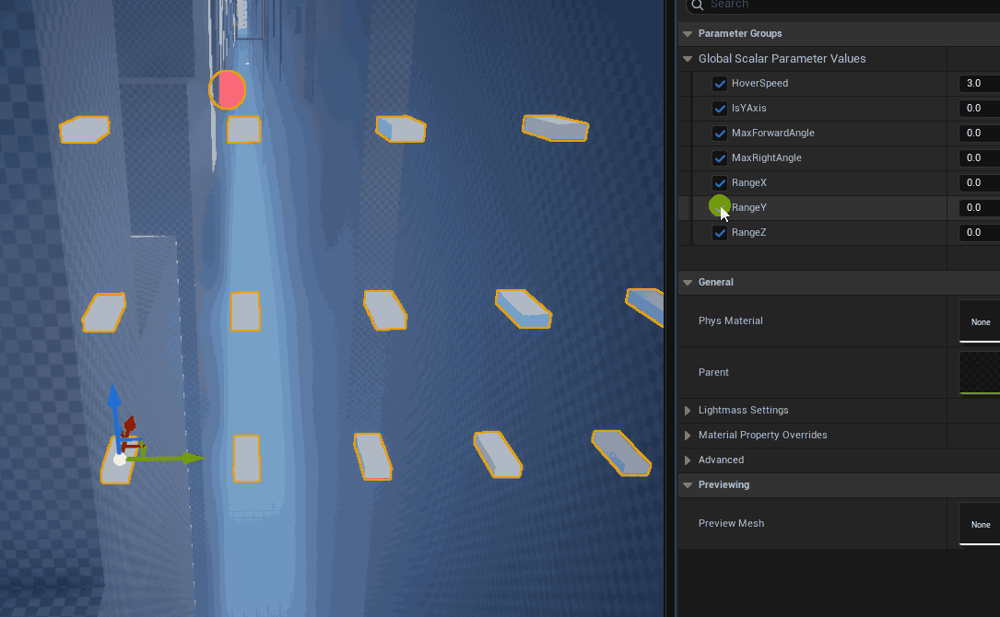
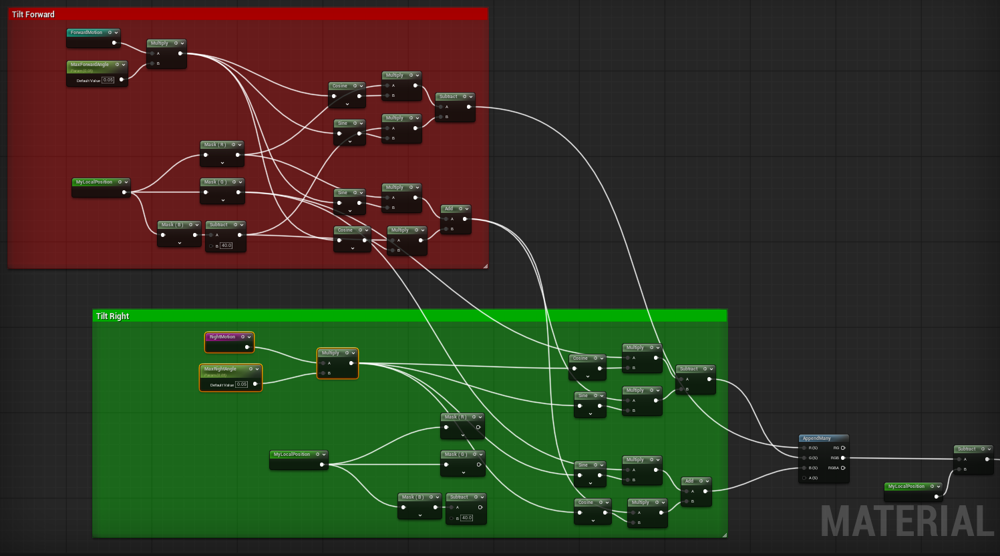
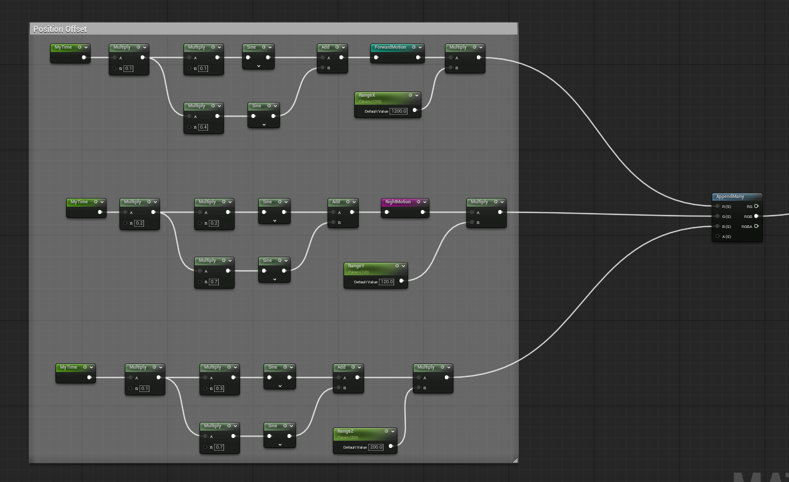
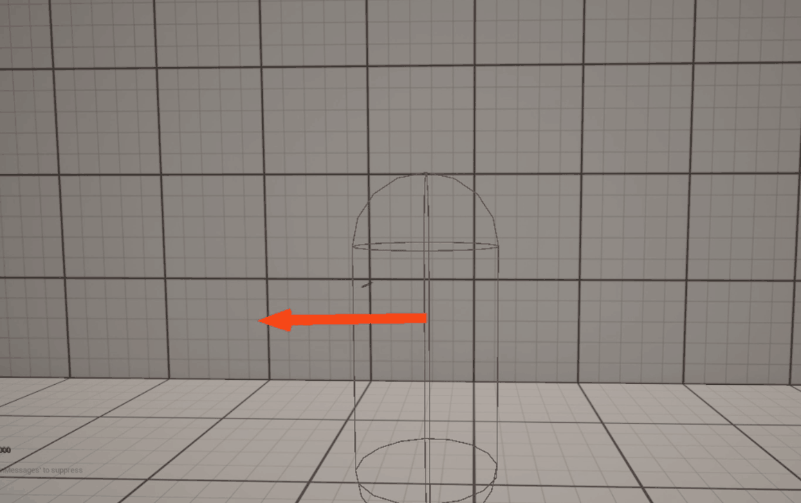

Unreal Engine
Grass-Trimming Mechanic
Why Touch Grass When You Can Cut It?: Check Out This Neat Grass-Trimming MechanicAerial Vehicle Prototype with AI Traffic
Early-stage prototype of a futuristic flying car system in a procedurally generated city.
I designed and implemented the core vehicle logic in C++ while experimenting with shader-driven animation for traffic simulation.
- Developed the flying vehicle movement system in C++
- Built basic traffic logic to simulate flow using instanced meshes
- Added shader displacement to traffic cars for hovering and tilting motion
- Generated a procedural city in Houdini to quickly create a test environment
Tools & Tech
Unreal Engine 5 · C++ · Houdini · MetaSound
Settings for the blueprint constructor

Settings for the material instance

Setup for matrix rotation (for tilting the cars)
{kind=link}

Setup for hovering
{kind=link}

Highway Run – Endless Road Game (Unreal Engine Prototype)
Fast-paced mobile game where players dodge traffic, survive longer, and use special abilities to escape danger.
I designed and developed the entire game from the ground up, including gameplay, visuals, and backend integration.
- Built the endless road system where passed sections seamlessly recycle ahead
- Programmed car distribution logic to always leave gaps for skill-based dodging
- Created unique abilities: Slow Motion, Shock Wave, and Shield
- Integrated a real-time Top 10 leaderboard via server connectivity
- Developed core logic in Blueprints and C++, balancing flexibility and performance
- Designed and textured the environment using Houdini and Substance Painter
- Implemented MetaSounds for dynamic, responsive audio
- Optimized and tested on iOS devices for mobile playability
Tools & Tech
Unreal Engine 5 · C++ · Blueprints · Houdini · Substance Painter · MetaSounds · iOS
Advanced Character Movement System (C++ in Unreal Engine)
A custom movement system demonstrating parkour and tactical gameplay mechanics, fully coded in C++.
I designed and implemented a complete third-person movement system with advanced traversal and combat features:
- Wall Cover System – snap to walls and move along them for tactical positioning.
- Wall Running – fluid parkour-style wall traversal.
- Ledge Detection & Grab – detect ledges dynamically and attach smoothly.
- Ledge Climb – climb up ledges with natural transitions.
- Enemy Vision System – ability to see enemies through walls for stealth/awareness gameplay.
- Fully programmed in C++ for performance, precision, and full control over mechanics.

City Explorer AR – iOS Location-Based Game
Augmented reality game where players explore their city to collect virtual images, inspired by location-based games like Pokémon Go.
I developed the full project for a client, handling gameplay, AR integration, and backend features:
- City Map & GPS Integration – players’ locations displayed on a map with marked collection points
- AR Collection Mechanics – camera mode activates when reaching locations to collect images distributed across the city. (Video demo simulates movement for presentation purposes)
- Timed Events – game has defined starting and ending dates for events
- Leaderboard Support – players can compete and track scores in real time
- Gallery System – players can view collected images within the app
- Designed and processed map assets and logo in Photoshop for a polished look
- Fully built and optimized for iOS devices
Tools & Tech
Unreal Engine 5 · C++ · ARKit · GPS Integration · Photoshop · iOS
Custom Vehicle Suspension System

Technical demonstration of a ray-traced vehicle suspension system with force balancing and realistic physics
I designed and implemented a fully programmable suspension system, exploring advanced vehicle mechanics:
- Ray-Traced Suspension – detects terrain and calculates forces per wheel dynamically
- Force Balancing – distributes weight and compensates for uneven surfaces to maintain stability
- Spring & Damping Simulation – realistic stiffening and shock absorption for each wheel.
- Experimental Physics – serves as a foundation for advanced vehicle mechanics and gameplay.